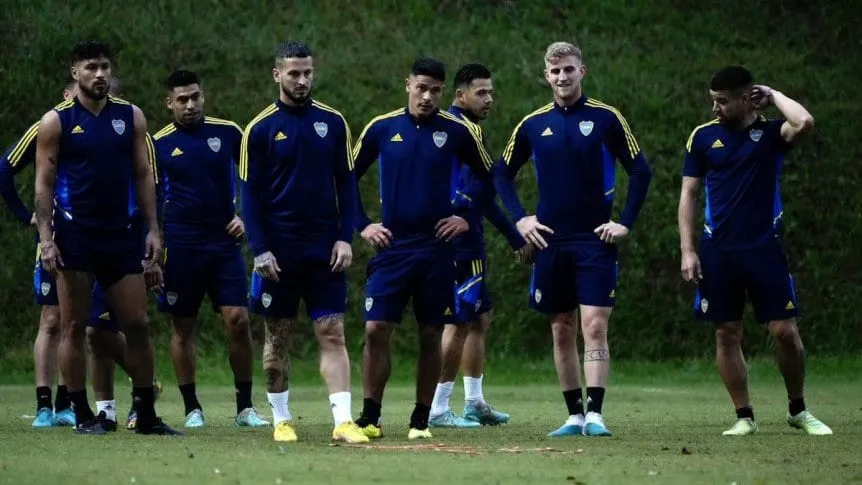

Club Atletico Boca Juniors
La historia del Club Atlético Boca Juniors transcurre desde 1905 hasta la actualidad siendo el fútbol desde los comienzos la esencia del club y, aunque posteriormente el crecimiento de la institución promovió el desarrollo de otras actividades como las bochas, básquet, entre otros, aquel permaneció como la disciplina deportiva sobre la cual se sustenta la entidad y la que le valió su reconocimiento a nivel nacional e internacional. Es el equipo con mayor cantidad de títulos oficiales en la historia del fútbol masculino argentino. En el plano internacional es la 3ra institución con mayor cantidad de copas en el mundo a nivel confederativo e interconfederativo (18) y la primera en el continente americano, empatando con Independiente de Argentina. También posee 4 títulos internacionales AFA/AUF que son contabilizados por FIFA, Conmebol y AFA, cerrando con un total de 22 títulos (1° en América). A nivel local cuenta con 35 campeonatos de primera división Argentina (29 de la era profesional y 6 de la era amateur) y también con 16 copas nacionales, siendo actualmente el equipo más ganador en la historia.
Boca hoy
Boca hoy: la lesión de Pol Fernández, el regreso de Exequiel Zeballos y últimas noticias.
El Xeneize ya pone todas las fichas en el partido del jueves frente a Arsenal en Sarandí. Ayer por la mañana, Guillermo Fernández se realizó estudios que arrojaron una lesión muscular en el cuádriceps derecho, por lo que sería baja, al menos, por las próximas dos semanas, a la espera del parte médico oficial. Por otro lado, Exequiel Zeballos continúa con su puesta a punto. Si bien no hay una fecha estipulada de regreso, todavía le quedan tres semanas de rehabilitación y podría volver a las canchas a finales de junio